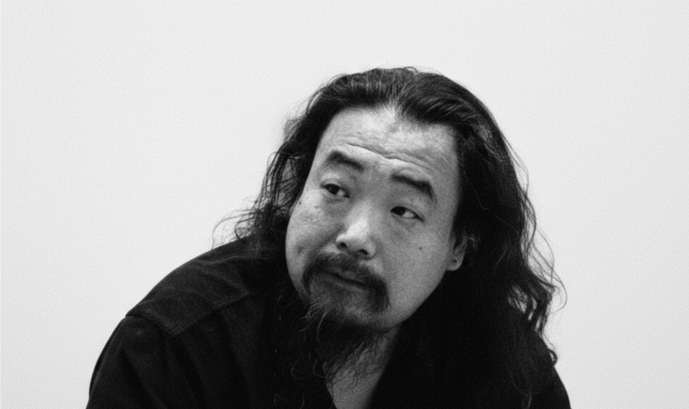
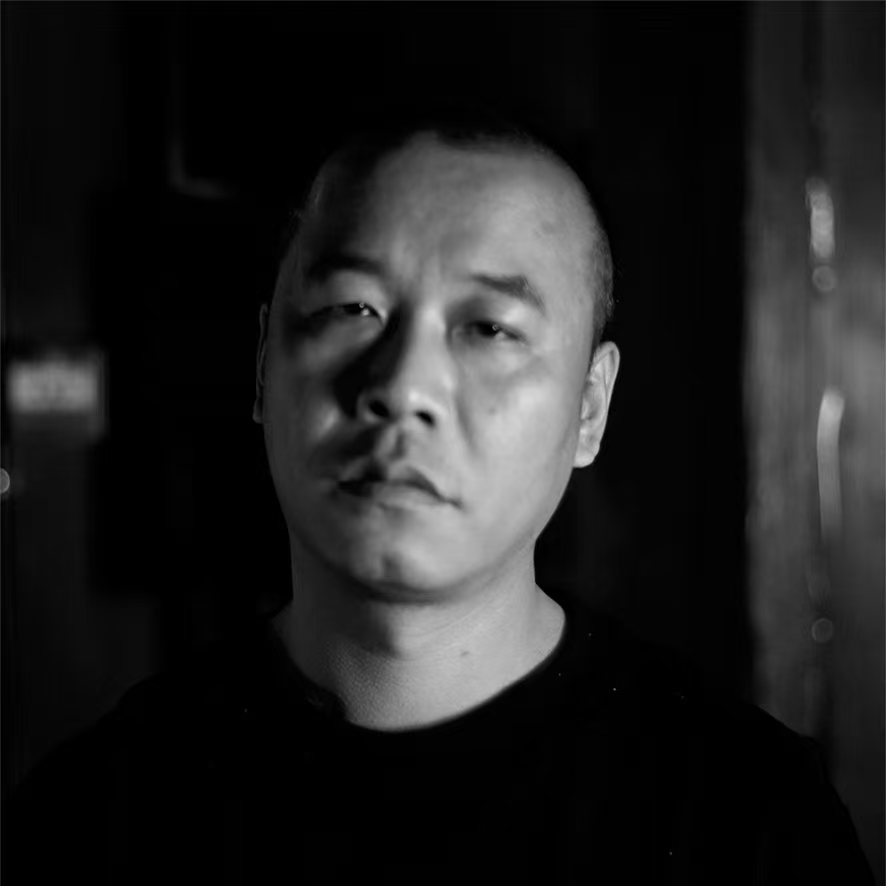
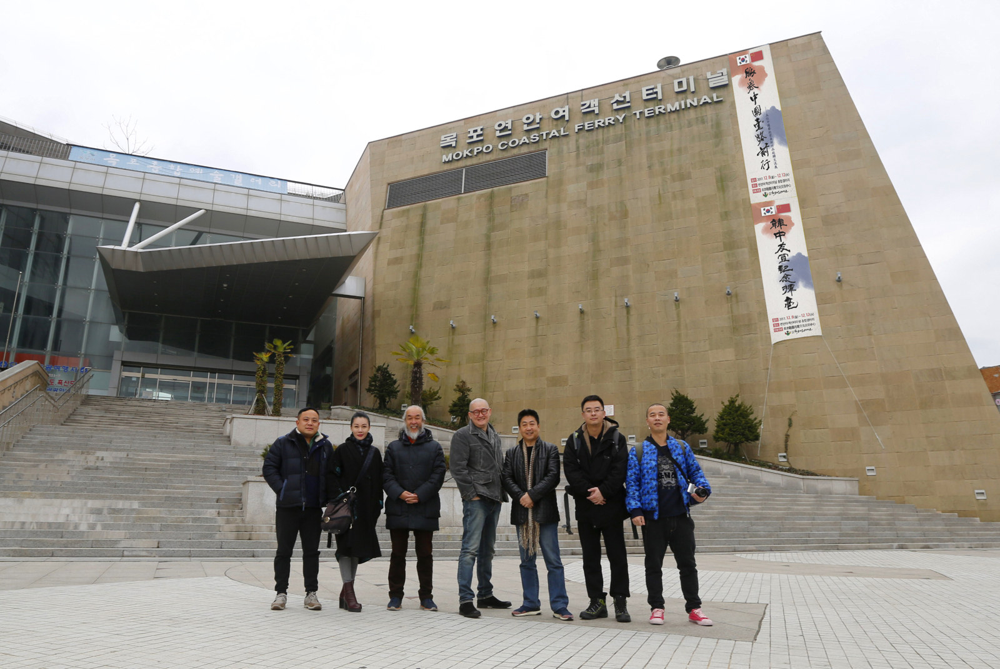
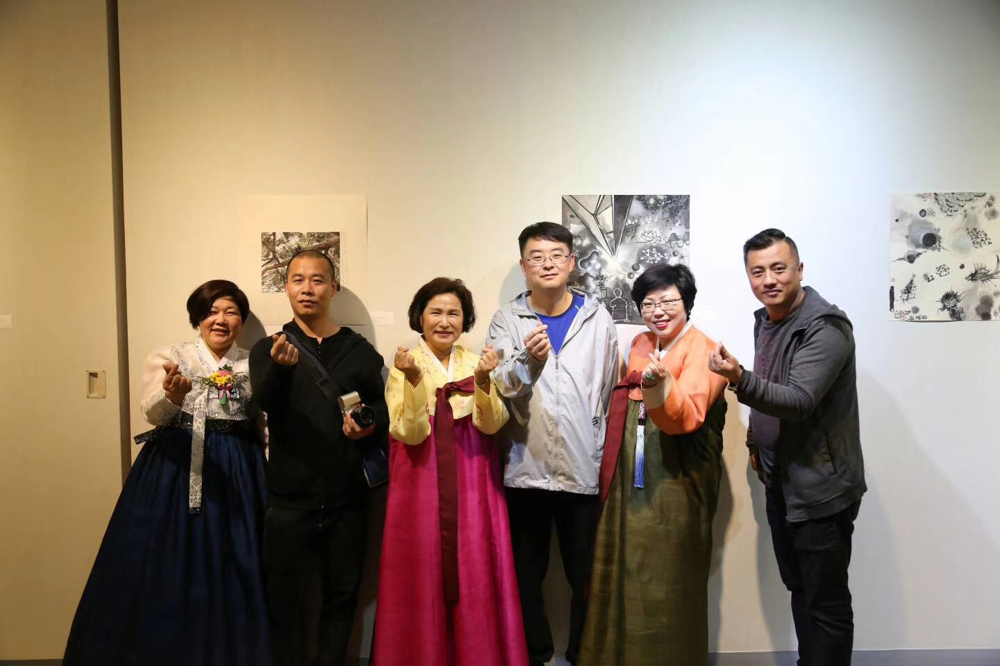
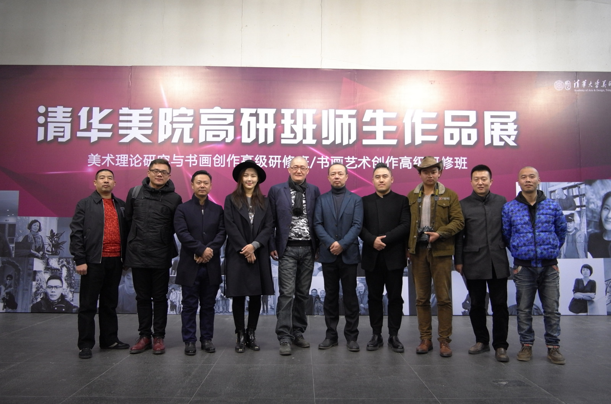
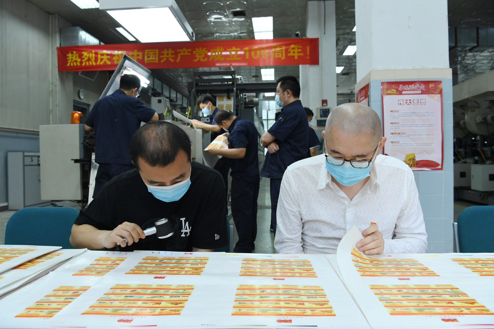
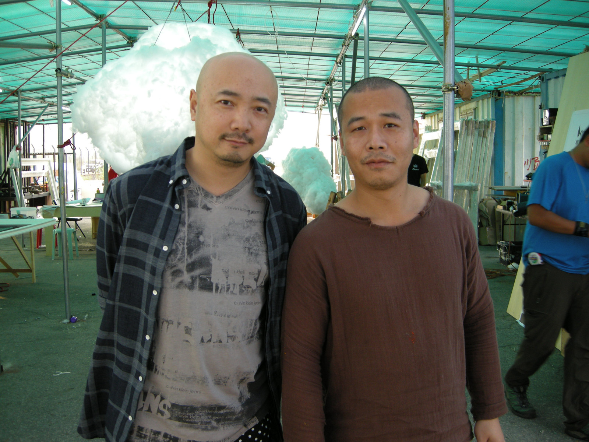
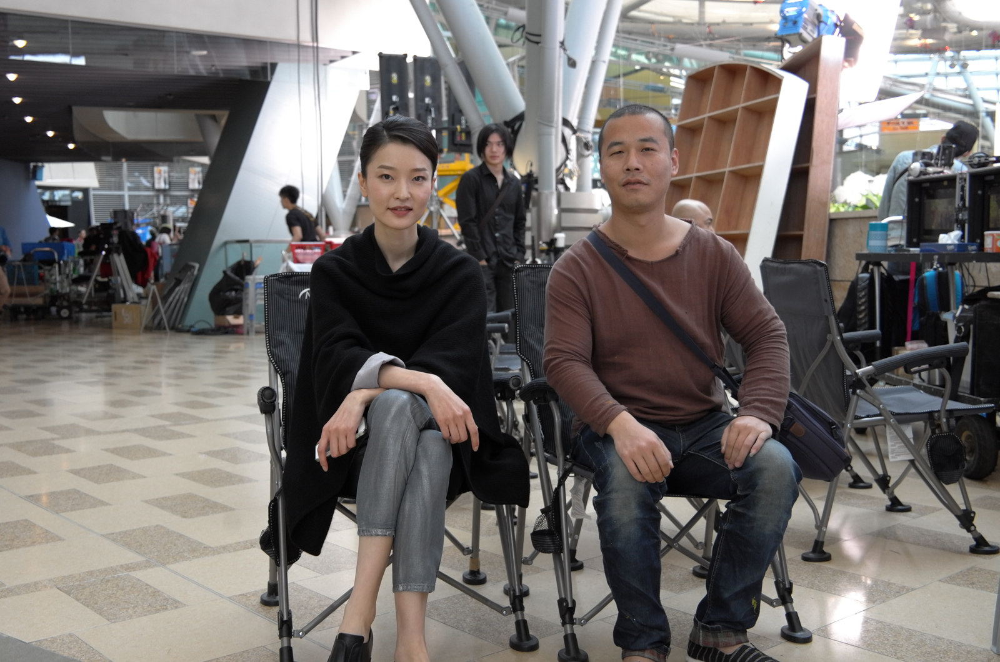
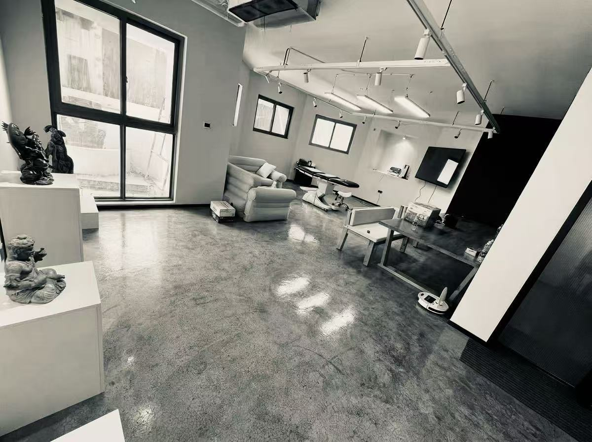

Wenzhe Wujiang Studio
Established as the first sustained studio structure for line-based practice and visual production.
SANTOO / Pan Yao
An artist-led practice centered on painting, extending into sound, writing, and independent research.

Pan Yao / 潘垚
Pan Yao is a Chinese visual artist working primarily in abstract painting. Active since 2010, his practice has developed from line and body-responsive image-making through realist study toward abstraction.
The current Ming series explores density, balance, boundaries, color, and negative space. Sound, writing, and research extend from this artistic practice.
Established as the first sustained studio structure for line-based practice and visual production.
Beijing, China.
Mokpo Museum, South Korea.
Participated in Art Beijing.
Tokyo Metropolitan Art Museum — Art Special Selection Award.
Tokyo Metropolitan Art Museum — International Art Award.

Chang Bin is an independent artist working across abstract painting, watercolor, and oil painting. He graduated from Handan University in 2003 and completed the oil-painting degree-completion program at the China Academy of Art in 2006.
The Tearing series explores boundaries and tension through color, material, and divisions within the image. His watercolors of grottoes and historical sites connect observation with the insertion of contemporary symbols.
Alongside his own work, Chang Bin undertakes curatorial and exhibition projects. He joined Wenzhe Wujiang Art Studio in 2016 and continues to collaborate with Pan Yao while maintaining his independent practice.
Graduated.
Graduated from the degree-completion program in oil painting.
Presented his own works and participated in the discussion alongside Pan Yao.
Bronze Award.
Bronze Award.
October and December editions.
Exhibition marking the 75th anniversary of the founding of the People’s Republic of China.
Excellence Award.
Namdo Art Museum, South Korea.
Mokpo Museum, South Korea.
Chinese contemporary young artists’ oil painting exhibition.
Executive curator.
Executive curator. Li Keran Academy of Painting, Beijing.
Curatorial work. SZ Art Center, Beijing 798 Art District.
Curatorial work. Samhyang-myeon Art Museum, Muan-gun, Jeollanam-do, South Korea.
Curatorial work. Mokpo Museum, South Korea.
Participated in design work.
Participated in design work.
Teaching assistant.
Joined the studio.
Invited to join the production with his mentor and undertook work related to art direction.
Tearing / Beijing Rongbao Modern and Contemporary Art Auction, Session 20. Hammer price: CNY 11,000, excluding commission.
Auction information supplied by the artist.






An artist-led working structure.
SANTOO brings Pan Yao’s painting, collaborative art projects, writing, sound, and independent research together. It developed from Wenzhe Wujiang Studio, established in 2010, and Santoo Studio, established in 2018.
Structural Studies continues as the research strand within SANTOO.
